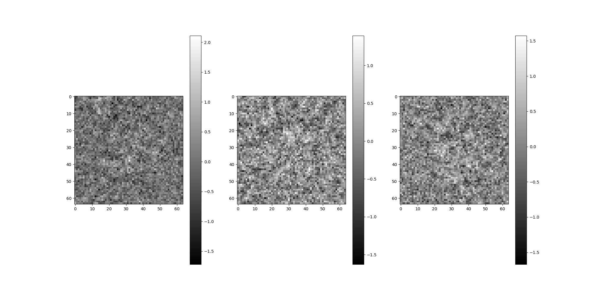

Note
Go to the end to download the full example code.
CTF: Contrast Transfer Function¶
This tutorial demonstrates the CTF and corresponds to lecture notes from MATH586 at Princeton.
# Get some common imports out of the way.
import os
from tempfile import TemporaryDirectory
import matplotlib.pyplot as plt
plt.rcParams["image.cmap"] = "gray"
import numpy as np
from scipy.ndimage import gaussian_filter
import aspire
# Image size to use throughout the demo.
IMG_SIZE = 512
Visualizing the CTF¶
ASPIRE can be used to create and visualize example CTFs.
Radially Symmetric CTF¶
The RadialCTFFilter is used to create a radially symmetric
Filter object for use with ASPIRE.
This object can also be used to calculate the transfer function as a numpy array.
from aspire.image import Image
from aspire.operators import CTFFilter, RadialCTFFilter
radial_ctf_filter = RadialCTFFilter(
voltage=200, # kV
defocus=10000, # angstrom, 10000 A = 1 um
Cs=2.26, # Spherical aberration constant
alpha=0.07, # Amplitude contrast phase in radians
B=0, # Envelope decay in inverse square angstrom (default 0)
)
# The CTF filter can be visualized as an image once it is evaluated at a specific resolution.
# More specifically the following code will return a transfer function as an array,
# which is then plotted.
rctf_fn = radial_ctf_filter.evaluate_grid(IMG_SIZE, pixel_size=1)
plt.imshow(rctf_fn)
plt.colorbar()
plt.show()
Elliptical CTF¶
For the general CTFFilter,
we provide defocus along two perpendicular axes u and v separately,
along with the angle the u-axis makes with the horizontal (x) axis.
Note that we chose an extreme astigmatism for demonstration,
and the values more typically differ by a few percent.
ctf_filter = CTFFilter(
voltage=200, # kV
defocus_u=15000, # angstrom, 10000 A = 1 um
defocus_v=10000,
defocus_ang=np.pi / 6, # Radians
Cs=2.26, # Spherical aberration constant
alpha=0.07, # Amplitude contrast phase in radians
B=0, # Envelope decay in inverse square angstrom (default 0)
)
# Again, we plot it, and note the difference from the RadialCTFFilter.
plt.imshow(ctf_filter.evaluate_grid(IMG_SIZE, pixel_size=1))
plt.colorbar()
plt.show()
Phase Flipping¶
A common technique used with CTF corrupted data is to apply a transformation
based on the sign of the (estimated) CTF.
We can easily visualize this in an idealized way by taking the sign of the
array returned by ASPIRE’s CTFFilter.evaluate_grid.
ctf_sign = np.sign(radial_ctf_filter.evaluate_grid(IMG_SIZE, pixel_size=1))
plt.imshow(ctf_sign)
plt.colorbar()
plt.show()
Applying CTF Directly to Images¶
Various defocus values and phase flipping correction will be applied directly to images using a mix of ASPIRE and Numpy.
Generate Example Image¶
def generate_example_image(L, noise_variance=0.1):
"""
Generates data similar to the MATH586 lecture notes.
:param L: Resolution in pixels.
:param noise_variance: Variance passed to random normal noise generator.
:return: Image as np array.
"""
# Empty Array
img = np.zeros((L, L))
# Construct grid
g2d = aspire.utils.grid_2d(L, normalized=False)
# Make central square
img[(np.abs(g2d["x"]) < L // 6) & (np.abs(g2d["y"]) < L // 6)] = 1
# Remove the outer corners
disc = g2d["r"] > (1.2 * L // 6)
img[disc] = 0
# Remove center circle
disc = g2d["r"] < L // 24
img[disc] = 0
# Smooth hard edges with some Gaussian blur
img = gaussian_filter(img, sigma=7)
# Add noise
img += np.random.normal(0, noise_variance, size=(L, L))
return img
img = Image(generate_example_image(IMG_SIZE), pixel_size=1)
img.show()
Apply CTF and Phase Flipping¶
First, CTF filters for a range of defocus values are created and used to corrupt the example image. Then phase flipping will use the actual CTF paramaters to attempt idealized corrections. ASPIRE has built in tools for performing these tasks which are discussed towards the end, but here the methods are demonstrated directly.
# Construct a range of CTF filters.
defoci = [2500, 5000, 10000, 20000]
ctf_filters = [
RadialCTFFilter(voltage=200, defocus=d, Cs=2.26, alpha=0.07, B=0) for d in defoci
]
Generate CTF corrupted Images¶
Generate images corrupted by progressively increasing defocus.
# For each defocus, apply filter to the base image.
imgs = Image(np.empty((len(defoci), IMG_SIZE, IMG_SIZE)), pixel_size=1)
for i, ctf in enumerate(ctf_filters):
imgs[i] = img.filter(ctf)[0]
imgs.show()
Generate Phase Flipped Images¶
# Construct the centered 2D FFT of the images.
imgs_f = aspire.numeric.fft.centered_fft2(imgs)
# Manually apply phase flipping transformation.
phase_flipped_imgs_f = np.empty_like(imgs_f)
for i, ctf in enumerate(ctf_filters):
# Compute the signs of this CTF
# In practice, this would be an estimated CTF,
# but in the demo we have the luxury of using the model CTF that was applied.
signs = np.sign(ctf.evaluate_grid(IMG_SIZE, pixel_size=1))
# Apply to the image in Fourier space.
phase_flipped_imgs_f[i] = signs * imgs_f[i]
# Construct the centered 2D FFT of the images.
phase_flipped_imgs = aspire.numeric.fft.centered_ifft2(phase_flipped_imgs_f).real
Image(phase_flipped_imgs, pixel_size=1).show()
Warning
Centering the signal FFT is critical when the CTF is centered in Fourier space.
Validating CTFFilter¶
The forward modeling of CTF can be validated by passing a corrupted image through CTF estimators and comparing the resulting defocus value(s).
Importance of correct CTF Estimation¶
Phase flipping with incorrect CTF estimates can further corrupt signal.
Here we plot a ray of the radial_ctf_filter modeled earlier,
along with an erroneous CTF filter.
bad_est_ctf_filter = RadialCTFFilter(
voltage=200,
defocus=14000, # Modeled CTF was 10000
Cs=2.26,
alpha=0.07,
B=0,
)
# Evaluate Filter, returning a Numpy array.
bad_ctf_fn = bad_est_ctf_filter.evaluate_grid(IMG_SIZE, pixel_size=1)
c = IMG_SIZE // 2 + 1
plt.plot(rctf_fn[c, c:], label="Model CTF") # radial_ctf_filter
plt.plot(bad_ctf_fn[c, c:], label="Incorrect CTF Estimate")
plt.legend()
plt.show()
Compare the idealized CTF phase flipping correction with phase flipping an incorrect CTF.
idealized_flipped_fn = rctf_fn * np.sign(rctf_fn)
incorrect_flipped_fn = rctf_fn * np.sign(bad_ctf_fn)
fig, (ax1, ax2) = plt.subplots(1, 2, sharex=True, sharey=True)
fig.suptitle("Application of Phase Flipping")
ax1.plot(idealized_flipped_fn[c, c:])
ax1.set_title("Idealized")
ax2.plot(incorrect_flipped_fn[c, c:])
ax2.set_title("Incorrect")
plt.show()
ASPIRE CtfEstimator¶
Here we will use ASPIRE’s CtfEstimator on a CTF corrupted image
so we can compare with the modeled corruption parameters.
from aspire.ctf import estimate_ctf
# Using our radial_ctf_filter from earlier, corrupt an image.
test_img = img.filter(radial_ctf_filter)
test_img.show()
# Create the image file in a tmp dir
with TemporaryDirectory() as d:
test_img.save(os.path.join(d, "test_img.mrc"))
radial_ctf_est = estimate_ctf(
data_folder=d,
pixel_size=1,
cs=radial_ctf_filter.Cs,
amplitude_contrast=radial_ctf_filter.alpha,
voltage=radial_ctf_filter.voltage,
psd_size=512,
num_tapers=2,
dtype=np.float64,
)
# We'll use these estimates next.
print(radial_ctf_est)
{'test_img.mrc': {'defocus_u': np.float64(10059.199674942412), 'defocus_v': np.float64(9949.835199766037), 'defocus_ang': np.float64(0.2510327833976409), 'cs': 2.26, 'voltage': 200, 'pixel_size': 1, 'amplitude_contrast': 0.07}}
Using ASPIRE’s CTF Estimate¶
Previously we computed some radial CTF estimates in radial_ctf_est.
Here we will view the application of these estimates in phase flipping
our example image.
# Get the relevant estimate.
est = radial_ctf_est["test_img.mrc"]
# Take an average defocus for radial case.
defocus = (est["defocus_u"] + est["defocus_v"]) / 2.0
print(f"defocus = {defocus}")
# Create a filter and evaluate.
est_ctf = RadialCTFFilter(
voltage=est["voltage"],
defocus=defocus, # Modeled CTF was 10000
Cs=est["cs"],
alpha=est["amplitude_contrast"],
B=0,
)
est_ctf_fn = est_ctf.evaluate_grid(IMG_SIZE, pixel_size=1)
# Compare the model CTF with the estimated CTF.
c = IMG_SIZE // 2 + 1
plt.plot(rctf_fn[c, c:], label="Model CTF")
plt.plot(est_ctf_fn[c, c:], label="Estimated CTF")
plt.legend()
plt.show()
defocus = 10004.517437354225
Compare the idealized CTF phase flipping correction with phase flipping the estimated CTF.
estimated_flipped_fn = rctf_fn * np.sign(est_ctf_fn)
plt.title("Application of estimated CTF Phase Flipping")
plt.plot(estimated_flipped_fn[c, c:])
plt.show()
Note
At the time of writing, elliptical CTF estimation is under going development and validation.
ASPIRE Sources: CTF and Phase Flipping¶
The most common uses of CTF simulation and correction are implemented behind the scenes in ASPIRE’s Source classes. For simulations, users are expected to provide their own reasonable CTF parameters. When in doubt they should refer to EMDB or EMPIAR for related datasets that may have CTF estimates. ASPIRE also commonly uses some reasonable values for the 10028 dataset in examples.
Simulation Source¶
The following code demonstrates adding the previous list of CTFs to a Simulation and performing phase flipping. No calculations beyond defining the CTF parameters are required.
from aspire.source import Simulation
# Create the Source. ``ctf_filters`` are re-used from earlier section.
src = Simulation(L=64, n=4, unique_filters=ctf_filters, pixel_size=1)
src.images[:4].show()
Phase flip the images.
src = src.phase_flip()
src.images[:4].show()
Compare corrupted and phase flipped images to those without corruption.
src.projections[:4].show()
Beyond Simulations: Experimental Data Sources¶
When loading experimental data, CTF parameters in the STAR file should be loaded automatically.
from aspire.source import RelionSource
# Load an example Relion starfile
src = RelionSource(
"../data/sample_relion_data.star",
pixel_size=1.338,
max_rows=10000,
data_folder="../data",
)
src = src.downsample(64) # easier to visualize
src.images[:3].show()
# Phase flip
src = src.phase_flip()
src.images[:3].show()
- 
CTFFIND4: External Validation¶
CTFFIND4 is often used by other cryo-EM distributions,
and was used to confirm the forward CTF filter model of ASPIRE.
For transparency, an example run using the test_img.mrc
generated earlier is documented.
CTFFIND4 estimated 9982.5, within 0.2% of the modeled defocus=10000 for the radially symmetric case.
Interactive session
(aspire_ctf_valid) ➜ bin ./ctffind
** Welcome to Ctffind **
Version : 4.1.14
Compiled : Jan 31 2023
Mode : Interactive
Input image file name [test_img.mrc] :
Output diagnostic image file name
[diagnostic_output.mrc] :
Pixel size [1] :
Acceleration voltage [200] :
Spherical aberration [2.26] :
Amplitude contrast [0.07] :
Size of amplitude spectrum to compute [1024] :
Minimum resolution [30.0] :
Maximum resolution [5.0] :
Minimum defocus [5000.0] :
Maximum defocus [50000.0] :
Defocus search step [100.0] :
Do you know what astigmatism is present? [yes] : yes
Slower, more exhaustive search? [no] : yes
Known astigmatism [0] : 0
Known astigmatism angle [0] : 0
Find additional phase shift? [no] : yes
Minimum phase shift (rad) [0.0] :
Maximum phase shift (rad) [3.15] :
Phase shift search step [0.1] : 0.1
Do you want to set expert options? [yes] : yes
Resample micrograph if pixel size too small? [no] : yes
Do you already know the defocus? [no] : no
Desired number of parallel threads [1] :
File name: test_img.mrc
File type: MRC
Dimensions: X = 512 Y = 512 Z = 1
Number of slices: 1
Working on micrograph 1 of 1
OpenMP is not available - will not use parallel threads.
100% [=================] done! (0h:00m45s)
DFMID1 DFMID2 ANGAST CC
10000.00 10000.00 0.00 0.56503
Timings
Initialization : 00:00:00
Spectrum computation : 00:00:00
Parameter search : 00:00:45
Diagnosis : 00:00:03
Total : 00:00:48
Estimated defocus values : 9982.50 , 9982.50 Angstroms
Estimated azimuth of astigmatism: 0.00 degrees
Additional phase shift : 2.020 degrees (0.035 radians) (0.011 PIf)
Score : 0.56568
Pixel size for fitting : 1.400 Angstroms
Thon rings with good fit up to : 2.0 Angstroms
Did not detect CTF aliasing
Summary of results : diagnostic_output.txt
Diagnostic images : diagnostic_output.mrc
Detailed results, including 1D fit profiles : diagnostic_output_avrot.txt
Use this command to plot 1D fit profiles : ctffind_plot_results.sh diagnostic_output_avrot.txt
Diagnostic Output Text
# Output from CTFFind version 4.1.14, run on 2023-02-02 15:13:07
# Input file: test_img.mrc ; Number of micrographs: 1
# Pixel size: 1.000 Angstroms ; acceleration voltage: 200.0 keV ; spherical aberration: 2.26 mm ; amplitude contrast: 0.07
# Box size: 1024 pixels ; min. res.: 30.0 Angstroms ; max. res.: 5.0 Angstroms ; min. def.: 5000.0 um; max. def. 50000.0 um
# Columns: #1 - micrograph number; #2 - defocus 1 [Angstroms]; #3 - defocus 2; #4 - azimuth of astigmatism; #5 - additional phase shift [radians]; #6 - cross correlation; #7 - spacing (in Angstroms) up to which CTF rings were fit successfully
1.000000 9982.502930 9982.502930 0.000000 0.035256 0.565683 1.980663
CTFFIND4 Diagnostic Output PDF (rendering of diagnostic_output_avrot.pdf).

CTFFIND4 Diagnostic Output MRC (rendering of diagnostic_output.mrc).
Total running time of the script: (0 minutes 7.809 seconds)